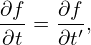

1.2 Gyro-angle symmetry of distribution function
Let us consider a simple case: a time-independent and spatial uniform magnetic field (B = B0 ).
Describe the velocity space using a right-handed cylindrical coordinates (v⊥,α,v∥), where v∥ = v ⋅ e∥,
e∥ is the unit vector along the magnetic field, α is the azimuthal angle of the velocity. Choosing
Cartesian coordinate system (x,y,z) for the configuration space, then the 6D phase-space are described
by coordinates (x,y,z,v⊥,α,v∥). The distribution function fp depends on 7 variables, namely
x,y,z,v∥,α,v⊥, and t.
).
Describe the velocity space using a right-handed cylindrical coordinates (v⊥,α,v∥), where v∥ = v ⋅ e∥,
e∥ is the unit vector along the magnetic field, α is the azimuthal angle of the velocity. Choosing
Cartesian coordinate system (x,y,z) for the configuration space, then the 6D phase-space are described
by coordinates (x,y,z,v⊥,α,v∥). The distribution function fp depends on 7 variables, namely
x,y,z,v∥,α,v⊥, and t.
Next, let use examine the Vlasov equation in this simple case and look if there is any coordinate
transform that can reduce the number of dimensions of the distribution function.
In (x,v⊥,α,v∥) coordinates, the Vlasov equation is written
 | (3) |
Since dv⊥∕dt = 0, dv∥∕dt = 0, and dα∕dt = −Ω, where Ω = qB∕m, the above equation is written
as
 | (4) |
i.e.,
 | (5) |
We assume that fp evolves on a time scale much longer the the gyro-period, i.e.,
 | (6) |
where ùúÄ is a small parameter. Further assume that the spatial variation of fp along the magnetic Ô¨Åeld is
weak:
where 2πv∥∕Ω is the parallel distance traveled by a particle within one gyro-period. Dropping terms of
O(ùúÄ1), Eq. (5) is written as
 | (8) |
i.e.,
 | (9) |
In terms of (x,y,z,v⊥,α,v∥) coordinates, the above equation is written as
 | (10) |
Define the following coordinates transform (guiding-center transform):
 | (11) |
 | (12) |
 | (13) |
 | (14) |
 | (15) |
Then, in terms of the new coordinates (x′,y′,z′,v∥′,v⊥′,α′), ∂fp∕∂α′ is written as

Eq. (10) implies that the above expression is zero. Therefore we obtain
 | (18) |
which indicates that, in the new coordinates (x′,y′,z′,v∥′,v⊥′,α′), α′ is an ignorable coordinate and
thus the phase space dimension of fp is reduced by one. This is obviously beneficial for numerically
solving the Vlasov equation.
Note that the gyro-angle symmetry is valid only in the guiding-center coordinates. In particle
coordinates, there is no gyro-angle symmetry.
For the case of static uniform magnetic field considered above, everything is simple. For non-uniform
static magnetic field plus an electromagnetic perturbation, things are a little complicate
and a great deal of efforts of gyrokinetic theory are devoted to taking into account these
effects.